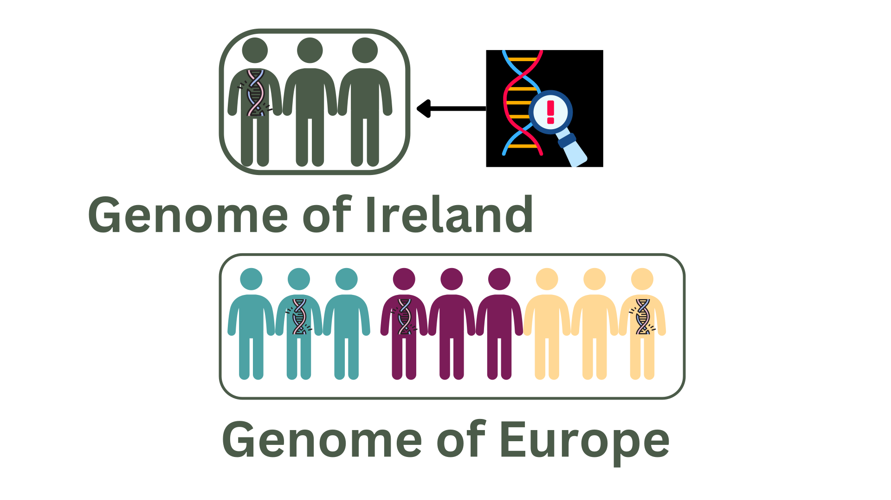

Welcome to the Genome of Ireland (GoI) project!
We aim to create a cohort of participants whose DNA represents the general adult population living on the island of Ireland. DNA from the Genome of Ireland (GoI) could help scientists to understand which differences in our DNA might be associated with certain traits and conditions versus those that are not.
This project is managed by a cross-disciplinary team on behalf of the Department of Health.
The same initiative is ongoing in other European countries. Together, these national projects will form the Genome of Europe (GoE). DNA provided by people in the Genome of Ireland (GoI) dataset will stored securely in the Irish branch of the Genomic Data Infrastructure project in the long-term.
The project launched officially on 29th January 2025. Further updates will be provided on this page
How will Genome of Ireland data be used?
GoI aims to establish a reference whole genome sequence (WGS) dataset collected from at least 1,200 adults living in Ireland
Here are three examples of how this data can be used. Click each image for more information.
Variant Lookup

To check which DNA changes that cause genetic diseases are specific to Ireland compared to the rest of Europe
Controls for research
studies

As a group of unaffected people (controls) whose DNA can be compared against DNA from affected people in Ireland
Genetic references for Irish population structure

To understand how populations have changed around Ireland over long periods in the past.
Core Management Team
The GoI project is run by a team of scientists, legal experts and public representatives

Gianpiero Cavalleri
Professor of Human Genetics
Royal College of Surgeons
Ireland
Gianpiero is a co-lead of the GoI project and coordinates the project
Gianpiero Cavalleri is Professor of Human Genetics, Deputy Director of the SFI FutureNeuro Research Centre and Director of the Human Genetic Variation Research Group at RCSI. Prof. Cavalleri is also Deputy Director (Translational Research) of the RCSI Office of Research and Innovation. Gianpiero was awarded a Ph.D. in human genetics at University College London in 2006. Prior to his arrival at RCSI, he worked at the Institute for Genome Science and Policy at Duke University, North Carolina. He was appointed to faculty at RCSI in 2008. Prof. Cavalleri has published over 160 articles in leading peer reviewed international journals including Nature, Nature Genetics, PNAS and the New England Journal of Medicine. AHis research group works at the interface of computational biology, clinical diagnostics and population genetics.

Russell McLaughlin
Assistant Professor of Human Genetics
Trinity College
Dublin
Russell is a co-lead of the GoI project and leads on technical aspects of the project with Aedin
Russell graduated from University of Bristol in 2005 with a BSc in Neuroscience and moved to Dublin two years later to undertake a PhD in Molecular Medicine under Professor Dan Bradley in the Smurfit Institute of Genetics, Trinity College Dublin. He completed a higher diploma (HDip) in Statistics at Trinity College in 2009 and defended his PhD thesis, From single nucleotide polymorphisms to next-generation sequencing in the complex genetics of amyotrophic lateral sclerosis, in 2012. In September 2016 Russell was appointed Ussher Assistant Professor in Genome Analysis in the Smurfit Institute of Genetics at Trinity College Dublin, where he now leads the Complex Trait Genomics group.
Laura Whelan
Lecturer in Human Genetics
Royal College of Surgeons
Ireland
Laura works across all activities in the project as a project manager
Laura completed her doctoral research under the supervision of Professor G. Jane Farrar in the School of Genetics and Microbiology at Trinity College Dublin. Her research focused on determining the underlying genetic cause of inherited retinal disease in patients who had not yet received a genetic diagnosis. Following this, Laura spent time working at the cancer genetics service at St. James' Hospital and worked with the genetic counseling team as a genomic associate, where she gained valuable insights into clinical genetics. Laura is currently working as a Senior Postdoctoral Researcher on the Irish arm of the European Genomic Data Infrastructure Project in the FutureNeuro research center at the Royal College of Surgeons in Ireland under the supervision of Professor Gianpiero Cavalleri. Laura has a keen interest in digital health, public and patient involvement in research, and the integration of genomics into healthcare practice.

Ifeolutembi Fashina
Post-doctoral Scientist
Royal College of Surgeons
Ireland
Tembi works across all activities in the project as a project manager
Tembi completed her PhD with Professor Cavalleri at RCSI, under the Centre for Research Training in Genomic Data Science (CRT GDS, University of Galway). Before this, Tembi worked in clinical trials pharmacovigilance and real-world evidence. Her current research involves bioinformatic analysis in the epilepsies. Tembi is interested in bringing science education and communication ideas to life.

Nuala Ryan
Patient and Public Contributor
Nuala is a PPI Contributor and the mother
of a child with NCBRS
Nuala is the Chair of Board of the NCBRS Worldwide Foundation and the mother of a child with NCBRS, so has day to day experience of the challenges the syndrome can cause for children with NCBRS and hence the areas of neurological research that can help with this. Nuala has 30 years drug development experience, both in pre-clinical and clinical development of compounds across numerous indications and therapeutic areas globally. She has a BSc in Pharmacology, a Diploma in International Business Management and training in Patient Advocacy and Engagement through IPPOSI in Ireland along with their Educational partners (UCD, Trinity College and the HPRA). Nuala is also experienced in the management of multiple EU funded Public Private Partnerships, involving co-ordinating activities of 40+ global academic, pharma, technology and Patient Organisation groups working together to solve key health related issues. As well as being Chair of the Board of Trustees for the NCBRS Worldwide Foundation, Nuala serves on Steering Committees for multiple projects and Initiatives such as: Genomics Data infrastructure Ireland (GDI), Future Neuro RCSI Governance Committee, Member of the Health Product Regulatory Authority (HPRA) Patient panel, Member of the Pharmacy Taskforce Ireland, Former Board member of Genomics Medicines Ireland among others. Nuala has close working relationship with RCSI through membership of the FutureNeuro Public and Patient Involvement (PPI) panel and involvement in many other activities at RCSI, such as lecturing on PPI to students, work in the NeuroInsight Dragons Den. Nuala was also part of the committee that developed the Framework for Quality Improvement in Public and Patient Involvement (PPI) in health and social care research
Laura Kavanagh
IPPOSI Representative
Laura represents the interests of patients and the general
public through her work in IPPOSI
Laura Kavanagh is the Research & Advocacy Manager in IPPOSI. Preparing events, consultation submissions, position papers and joint advocacy activities, she encourages others to consider the patient perspective in preparing new policies, designing new programmes, and planning for new research and innovation. Before taking up the role in 2017, Laura worked for three years as the National Coordinator for EUPATI, building multi-stakeholder platforms (like IPPOSI) in other countries across Europe. Prior to this, Laura worked in local government politics in the UK, and in international organisations (UN, OSCE, Council of Europe) in Uganda, Kosovo, Strasbourg and Geneva. She believes everyone has the right to enjoy good health and quality care, and she believes we all have a role in building a better health future for ourselves and for generations to come. When not at work, Laura is a busy mum to two (energetic) little humans.

Ciara Staunton
Independent Consultant and Legal Academic
Ciara leads on the ELSI work package, alongside Markus, ensuring that Genome of Ireland meets all ELSI considerations
Ciara is an independent consultant and a legal academic with extensive international experience working in Europe and Africa. Her expertise is on the legal and ethical issues in the field of biobanks, genomics, stem cells, health data, data protection and governance, scientific research, and public health.

Markus Helfert
Professor for Digital Service Innovation,
Innovation Value Institute
Maynooth University
Markus leads on the ELSI work package,alongside Ciara, ensuring that Genome of Ireland meets all ELSI considerations
Markus Helfert is Professor in Digital Service Innovation at Maynooth University, Innovation Value Institute (Ireland) and the Director of the Business Informatics Group at Maynooth University. He is a Principle Investigator at Lero – The Irish Software Research Centre and at the Adapt Research Centre. His research is centered on Digital Service Innovation, Smart Cities and IoT-based Smart Environments and includes research areas such as Service Innovation, Intelligent Transportation Systems, Smart Services, Building Information Management, FinTech, Data Value, Enterprise Architecture, Technology Adoption, Analytics, Business Process Management. Prof. Helfert is an expert in Data Governance Standards and is involved in European Standardization initiatives. Markus Helfert has authored more than 200+ academic articles, journal and book contributions and has presented his work at international conferences. Helfert has received national and international grants from agencies such as European Union (FP7; H2020), Science Foundation Ireland, and Enterprise Ireland, was project coordinator on EU projects, and is the Project coordinator of the H2020 Projects: PERFORM on Digital Retail.

Edmund Gilbert
Lecturer in Bioinformatics and Genomics
Royal College of Surgeons
Ireland
Ed leads participant recruitment alongside Eva
Dr Gilbert is a researcher in population genetics and genomics. Dr Gilbert studied his undergraduate and Masters in Biochemistory and Genetics at the University of Nottingham in the UK before moving to RCSI in 2015 where he completed his PhD in population genetics and genomics. Dr Gilbert is currently a Lecture in the School of Pharmacy and Biomolecular Sciences, and is also a member of the RCSI FutureNeuro SFI Research Centre.

Eva Szegezdi
Lecturer in Biochemistry and Head of the Blood Cancer Biobank in Ireland
University of Galway
Eva leads participant recruitment alongside Ed
Dr. Szegezdi received her PhD in medical science in 2000 studying cell death signalling at the University of Debrecen, Hungary. She then joined the Cell Stress and Apoptosis Research laboratory led by Prof. Afshin Samali at the National University of Ireland, Galway in 2001 to study stress-induced cell death in heart and pancreatic cells. In 2010 she established her own research group as a Science Foundation Ireland Starting Investigator (SIRG) and an Irish Cancer Society Research Fellow focusing on how the tissues surrounding cancer cells protect the tumour from chemotherapeutics. She took up a university lecturer position in the Discipline of Biochemistry, National University of Ireland, Galway in 2011 where she is now a lecturer, the director of the Masters degree programme on cancer research and head of the Cancer Niche Research Laboratory and a principal investigator in the recently established Blood Cancer Network Ireland funded by SFI and the Irish Cancer Society.

Aedin Culhane
Professor of Biomedical Sciences (Cancer Genomics)
University of Limerick
Aedin leads on data generation and assembly along with Russell.
Aedín Culhane is a Professor of Biomedical Sciences (Cancer Genomics) in the UL School of Medicine. She is a computational oncologist with expertise in multi-omics data integration, statistical genomics, clinical bioinformatics, and genomics in oncology. She has over 20 years’ experience in cancer genomics, of which over 15 years were in the Dana-Farber Cancer Institute and Harvard TH Chan School of Public Health in Boston, USA. Her recent research focuses on algorithm development and integrative data of single cell molecular data in cancer to identify molecules that regulate and can be targeted during tumor development, progression, drug response, and resistance. She is a member of the Human Cell Atlas (https://www.humancellatlas.org) project. She is a leader in the Bioconductor (www.bioconductor.org) community, a global open source, open development software in R for genomics, and an advocate for open-source science.
Previous Team Members

Derick Mitchell
Former IPPOSI Representative
IPPOSI
Derick was IPPOSI CEO
European Collaborators
European Genomic Data Infrastructure Project
The European level GDI project consisting of 24 member states. Our European colleagues work with us to implement the proof of concept infrastructure.
Genome of Europe
The Genome of Europe initiative aims to build a European network of national genomic reference cohorts of at least 500,000 citizens. These reference cohorts will be selected to be representative of the European population.
National Collaborators
The Health Research Board
The Health Research Board (HRB) is a State Agency under the Department of Health. We support and fund health and social care research and provide evidence to inform policy and practice.
FutureNeuro Research Centre
A multi-disciplinary, inter-institutional research centre that aims to change the patient journey through research informed by the needs of both patients and neurologists.
The Irish Platform for Patient Organisations, Science and Industry
Inspires and promotes patient involvement in the treatment and decision-making processes that affect healthcare in Ireland.
University of Galway
.
Data protection and research information for the project is provided here
The Genome of Ireland project is advised by collaborators and a Steering Committee with expertise in genomics, healthcare, bioinformatics, patient advocacy and lived experience.
| Name | Title | Organisation |
|---|---|---|
| Avril Kennan | Collaborator | HRCI |
| Sally Ann Lynch | Collaborator | University College Dublin |
| Cathal Seoighe | Collaborator | University of Galway |
| Helen Shortt | Collaborator | National Genetics and Genomics Office (NGGO), HSE |
| Ann Mc Cartney | Collaborator | University of California, Santa Cruz, Santa Cruz, CA |
| Helene McNulty | Collaborator | Ulster University |
| Avril Kennan | Collaborator | HRCI |
| David Henshall | Collaborator | FutureNeuro, Research Ireland |
| David Gibson | Collaborator | Ulster University |
| Elaine Murray | Collaborator | Ulster University |
Frequently Asked Questions
How can I join this project?
Recruitment will be advertised around the country. Please check this page for future updates.
What organisations sponsor this project?
Genome of Ireland is sponsored by the EU Digital Europe Programe (101168231) and the Irish Health Research Board (GOI-2024-001)